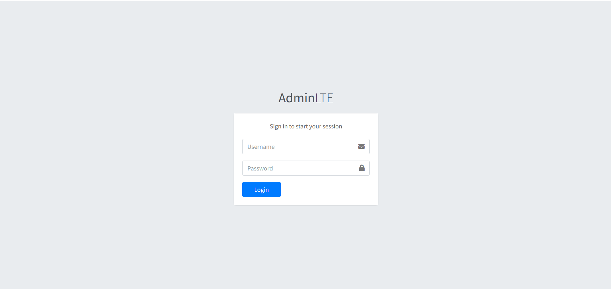
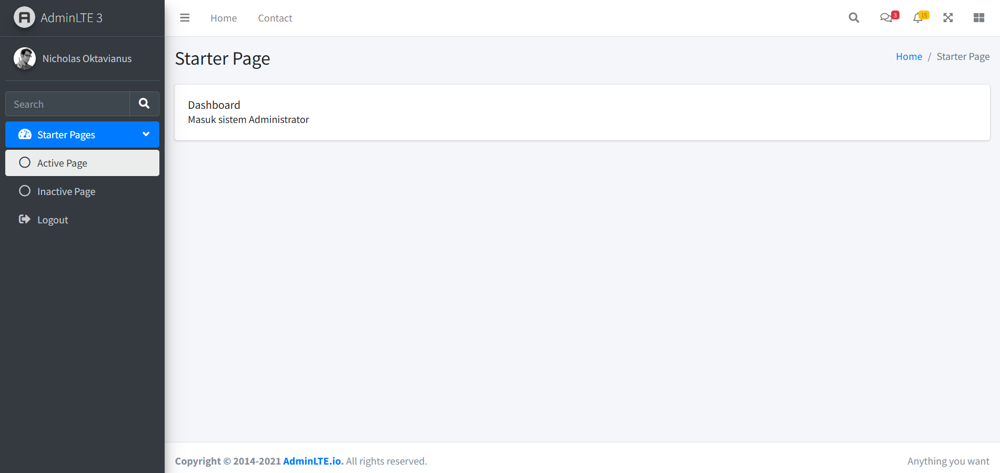

Administrator dan Login
Mata Kuliah Pemrograman Web Bisnis - Pertemuan 3
| Nama |
Nicholas Oktavianus |
```
| NIM |
2422500032 |
| Framework |
CodeIgniter 3 + AdminLTE 3 |
| Repository |
GitHub Repository
|
| Hasil Project |
yukirai.gt.tc
|
| Login |
Username: admin
Password: admin
|
```
Fitur
- Login administrator dengan validasi form dan pengecekan database.
- Halaman dashboard yang hanya dapat diakses setelah administrator berhasil login.
- Fitur logout melalui menu sidebar.
- Nama administrator ditampilkan pada dashboard sesuai dengan data login.
Halaman Login

Gambar 1. Halaman login administrator.
Halaman Dashboard

Gambar 2. Halaman dashboard administrator setelah berhasil login.
Informasi Aplikasi
Aplikasi dijalankan secara lokal menggunakan XAMPP dengan alamat:
http://localhost/pwb_2422500032/